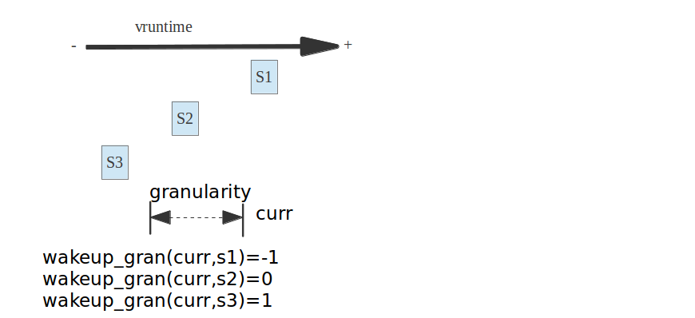

3.3.5.5. pick_next_task_fair选择下一个被调度的进程
每个调度器类sched_class都必须提供一个pick_next_task函数用以在就绪队列中选择一个最优的进程来等待调度,而我们的cfs调度器类中,选择下一个将要运行的 进程由pick_next_task_fair函数来完成
之前我们在讲主调度器的时候,主调度器schedule函数在进程调度抢占时,会通过__schedule函数调用全局pick_next_task选择一个最优的进程，在pick_next_task 中我们就按照优先级依次调用不同调度器类提供的pick_next_task方法
pick_next_task_fair
选择下一个将要运行的进程pick_next_task_fair执行，其代码执行流程如下，对于此函数的讲解我们从simple标签开始,这个常规状态下的pick_next思路，简单来说就是 pick_next_task_fair函数的框架
again:
控制循坏来读取最优进程
#ifdef CONFIG_FAIR_GROUP_SCHED
完成组调度下的pick_next选择
返回被选择的调度实体指针
#endif
simple:
最基础的pick_next函数
返回被选择的调度实体指针
idle:
如果系统中没有可运行的进程,则需要调度idle进程
可见我们会发现:
simple标签时cfs中最基础的pick_next操作
idle则使得在没有进程被调度时,调度idle进程
again标签用于循环的进行pick_next操作
static struct task_struct *
pick_next_task_fair(struct rq *rq, struct task_struct *prev, struct rq_flags *rf)
{
struct cfs_rq *cfs_rq = &rq->cfs;
struct sched_entity *se;
struct task_struct *p;
int new_tasks;
again:
if (!sched_fair_runnable(rq)) //如果nr_running计数器为0,当前队列上没有可运行进程,则需要调度idle进程
goto idle;
#ifdef CONFIG_FAIR_GROUP_SCHED
if (!prev || prev->sched_class != &fair_sched_class) //如果当前运行的进程prev不是被fair调度的普通非实时进程
goto simple;
/*
* Because of the set_next_buddy() in dequeue_task_fair() it is rather
* likely that a next task is from the same cgroup as the current.
*
* Therefore attempt to avoid putting and setting the entire cgroup
* hierarchy, only change the part that actually changes.
*/
do {
struct sched_entity *curr = cfs_rq->curr;
/*
* Since we got here without doing put_prev_entity() we also
* have to consider cfs_rq->curr. If it is still a runnable
* entity, update_curr() will update its vruntime, otherwise
* forget we've ever seen it.
*/
if (curr) { //如果当前进程在curr在队列上,则需要更新其统计量和虚拟运行时间，否则设置curr为空
if (curr->on_rq)
update_curr(cfs_rq);
else
curr = NULL;
/*
* This call to check_cfs_rq_runtime() will do the
* throttle and dequeue its entity in the parent(s).
* Therefore the nr_running test will indeed
* be correct.
*/
if (unlikely(check_cfs_rq_runtime(cfs_rq))) {
cfs_rq = &rq->cfs;
if (!cfs_rq->nr_running)
goto idle;
goto simple;
}
}
se = pick_next_entity(cfs_rq, curr); //选择一个最优的调度实体
cfs_rq = group_cfs_rq(se);
} while (cfs_rq); //如果调度的进程仍属于当前组,那么选取下一个可能被调度的任务,以保证子组件调度的公平性
p = task_of(se); //获取调度实体se的进程实体信息
/*
* Since we haven't yet done put_prev_entity and if the selected task
* is a different task than we started out with, try and touch the
* least amount of cfs_rqs.
*/
if (prev != p) {
struct sched_entity *pse = &prev->se;
while (!(cfs_rq = is_same_group(se, pse))) {
int se_depth = se->depth;
int pse_depth = pse->depth;
if (se_depth <= pse_depth) {
put_prev_entity(cfs_rq_of(pse), pse);
pse = parent_entity(pse);
}
if (se_depth >= pse_depth) {
set_next_entity(cfs_rq_of(se), se);
se = parent_entity(se);
}
}
put_prev_entity(cfs_rq, pse);
set_next_entity(cfs_rq, se);
}
goto done;
simple:
#endif
if (prev)
put_prev_task(rq, prev); //将当前进程放入运行队列的合适位置
do {
se = pick_next_entity(cfs_rq, NULL); //选出下一可执行的调度实体(进程)
set_next_entity(cfs_rq, se); //把选出的进程从红黑树中移除，更新红黑树,会调用__dequeue_entity完成此工作
cfs_rq = group_cfs_rq(se); //在非组调度的情况下返回NULL
} while (cfs_rq);
p = task_of(se); //获取到调度实体指代的进程信息
done: __maybe_unused;
#ifdef CONFIG_SMP
/*
* Move the next running task to the front of
* the list, so our cfs_tasks list becomes MRU
* one.
*/
list_move(&p->se.group_node, &rq->cfs_tasks);
#endif
if (hrtick_enabled(rq))
hrtick_start_fair(rq, p);
update_misfit_status(p, rq);
return p;
idle:
if (!rf)
return NULL;
new_tasks = newidle_balance(rq, rf);
/*
* Because newidle_balance() releases (and re-acquires) rq->lock, it is
* possible for any higher priority task to appear. In that case we
* must re-start the pick_next_entity() loop.
*/
if (new_tasks < 0)
return RETRY_TASK;
if (new_tasks > 0)
goto again;
/*
* rq is about to be idle, check if we need to update the
* lost_idle_time of clock_pelt
*/
update_idle_rq_clock_pelt(rq);
return NULL;
}
3.3.5.5.1. put_prev_task函数
3.3.5.5.1.1. 全局put_prev_task函数
put_prev_task是用来将前一个进程prev放回到就绪队列中,这是一个全局函数，而每个调度器也必须实现一个自己的put_prev_task函数
static inline void put_prev_task(struct rq *rq, struct task_struct *prev)
{
prev->sched_class->put_prev_task(rq, prev);
}
3.3.5.5.1.2. CFS的put_prev_task_fair函数
static void put_prev_task_fair(struct rq *rq, struct task_struct *prev)
{
struct sched_entity *se = &prev->se;
struct cfs_rq *cfs_rq;
for_each_sched_entity(se) {
cfs_rq = cfs_rq_of(se);
put_prev_entity(cfs_rq, se);
}
}
static void put_prev_entity(struct cfs_rq *cfs_rq, struct sched_entity *prev)
{
/*
* If still on the runqueue then deactivate_task()
* was not called and update_curr() has to be done:
*/
if (prev->on_rq)
update_curr(cfs_rq);
/* throttle cfs_rqs exceeding runtime */
check_cfs_rq_runtime(cfs_rq);
check_spread(cfs_rq, prev);
if (prev->on_rq) {
update_stats_wait_start(cfs_rq, prev);
/* Put 'current' back into the tree. */
__enqueue_entity(cfs_rq, prev);
/* in !on_rq case, update occurred at dequeue */
update_load_avg(cfs_rq, prev, 0);
}
cfs_rq->curr = NULL;
}
3.3.5.5.2. pick_next_entity函数
//1. 首先要确保任务组之间的公平这也是设置组的原因之一
//2. 选择下一个合适的(优先级比较高的)进程,因为它确实需要马上运行
//3. 如果没有条件2中进程，那么为了良好的局部性,选择上一次执行的进程
//4. 只要有任务存在就不要让CPU空转，只有在没有进程的情况下才会让CPU运行idle进程
static struct sched_entity *
pick_next_entity(struct cfs_rq *cfs_rq, struct sched_entity *curr)
{
struct sched_entity *left = __pick_first_entity(cfs_rq); //选取红黑树最左边的进程
struct sched_entity *se;
/*
* If curr is set we have to see if its left of the leftmost entity
* still in the tree, provided there was anything in the tree at all.
*/
//如果left==null或者curr!=null 并且curr比left进程更优(即curr的虚拟运行时间更小)
//说明curr进程是自动放弃与运行权力，且其比最左进程更优
if (!left || (curr && entity_before(curr, left))
left = curr;
se = left; /* ideally we run the leftmost entity */ //存储了cfs_rq队列中最优的那个进程
/*
* Avoid running the skip buddy, if running something else can
* be done without getting too unfair.
*/
if (cfs_rq->skip == se) { //如果skip存储了需要跳过不参与调度的进程调度实体,那么我们需要选择次优的调度实体来进行调度
struct sched_entity *second;
if (se == curr) {
second = __pick_first_entity(cfs_rq); //se == curr == skip选择最左的那个调度实体left
} else {
second = __pick_next_entity(se); //选择红黑树上第二左的进程结点
if (!second || (curr && entity_before(curr, second))) //如果没有次优进程或者curr比second进程更优，则选择curr
second = curr;
}
if (second && wakeup_preempt_entity(second, left) < 1) //判断left和second的vruntime差距是否小于sysctl_sched_wakeup_granularity,即如果second能抢占left
se = second;
}
/*
* Prefer last buddy, try to return the CPU to a preempted task.
*/
if (cfs_rq->last && wakeup_preempt_entity(cfs_rq->last, left) < 1)
se = cfs_rq->last;
/*
* Someone really wants this to run. If it's not unfair, run it.
*/
if (cfs_rq->next && wakeup_preempt_entity(cfs_rq->next, left) < 1)
se = cfs_rq->next;
//清楚掉这个指针
clear_buddies(cfs_rq, se);
return se;
}
3.3.5.5.2.1. cfs的last和next指针域
在pick_next_entity的最后，要把红黑树最左下角的进程和另外两个进(next和last)做比较,next是抢占失败的进程,而last则是抢占成功后被抢占的进程,这三个进程到底哪一个是最优的next进程呢
linux CFS实现的判决条件是:
尽可能满足需要刚被唤醒的进程抢占其他进程的需求
尽可能减少以上这种抢占带来的缓存刷新的影响
cfs_rq的last和next指针,last表示最后一个执行wakeup的sched_entity, next表示最后一个被wakeup的sched_entity.他们在进程wakeup的时候会赋值,在pick新sched_entity的时候,会优先选择这些last或者next指针的sched_entity,有利于提高缓存的命中率
因此我们优选出来的进程必须同last和next指针域进行对比，其实就是检查就绪队列中的最优进程,即红黑树最左边节点last是否可以抢占last和next指针域，检查是否可以抢占是通过wake_up_preempt_entity函数来完成的
3.3.5.5.2.2. wakeup_preempt_entity检查是否可以被抢占
/*
* Should 'se' preempt 'curr'.
*
* |s1
* |s2
* |s3
* g
* |<--->|c
*
* w(c, s1) = -1
* w(c, s2) = 0
* w(c, s3) = 1
*
*/
static int
wakeup_preempt_entity(struct sched_entity *curr, struct sched_entity *se)
{
s64 gran, vdiff = curr->vruntime - se->vruntime; //curr和se的vruntime的差值
if (vdiff <= 0) //如果curr的vruntime比较小,说明curr更加需要补偿,即se无法抢占curr
return -1;
gran = wakeup_gran(se); //计算curr的最小抢占期限粒度，当差值大于最小粒度时才抢占,这样可以避免频繁抢占
if (vdiff > gran)
return 1;
return 0;
}
static unsigned long wakeup_gran(struct sched_entity *se)
{
unsigned long gran = sysctl_sched_wakeup_granularity; //NICE_0_LOAD的基准最小期限
/*
* Since its curr running now, convert the gran from real-time
* to virtual-time in his units.
*
* By using 'se' instead of 'curr' we penalize light tasks, so
* they get preempted easier. That is, if 'se' < 'curr' then
* the resulting gran will be larger, therefore penalizing the
* lighter, if otoh 'se' > 'curr' then the resulting gran will
* be smaller, again penalizing the lighter task.
*
* This is especially important for buddies when the leftmost
* task is higher priority than the buddy.
*/
return calc_delta_fair(gran, se); //计算抢占的粒度
}
到底能不能选择last和next两个进程,则时wakeup_preempt_entity函数决定的,图解如下
